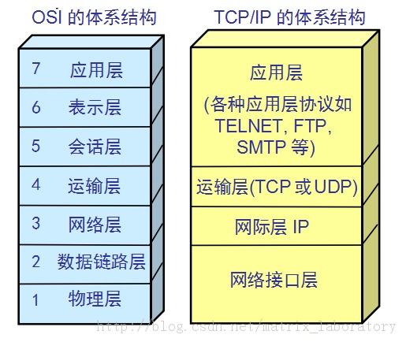
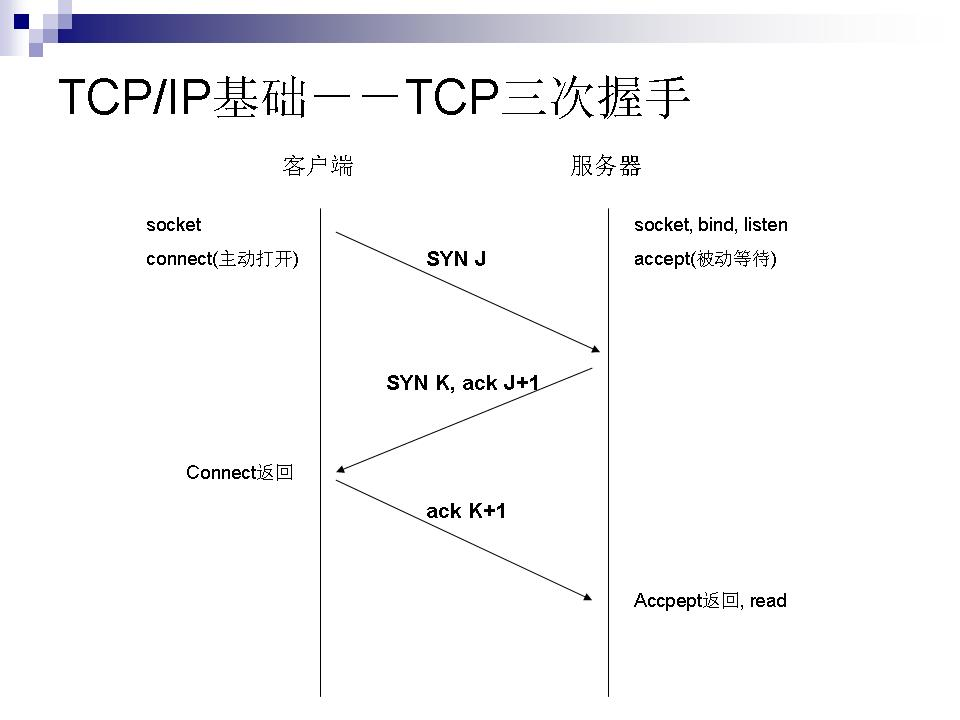
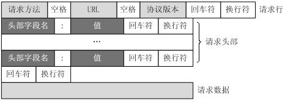

这个是okhttp的源码分析，这里使用的版本是3.10.0,项目地址 http://square.github.io/okhttp/
主要分为这几个部分
1 |
|
这里是最简单的一次get请求，先来分析一下这个get请求
- 创建OkHttpClient
1
OkHttpClient client = new OkHttpClient();
先看一下他的空参构造1
2
3public OkHttpClient() {
this(new Builder());
}
里面调用了他的有参构造1
2
3
4
5
6
7
8
9
10
11
12
13
14
15
16
17
18
19
20
21
22
23
24
25
26
27
28
29
30
31
32
33
34
35
36
37
38
39
40
41
42
43
44
45
46
47
48
49
50OkHttpClient(Builder builder) {
this.dispatcher = builder.dispatcher;
this.proxy = builder.proxy;
this.protocols = builder.protocols;
this.connectionSpecs = builder.connectionSpecs;
this.interceptors = Util.immutableList(builder.interceptors);
this.networkInterceptors = Util.immutableList(builder.networkInterceptors);
this.eventListenerFactory = builder.eventListenerFactory;
this.proxySelector = builder.proxySelector;
this.cookieJar = builder.cookieJar;
this.cache = builder.cache;
this.internalCache = builder.internalCache;
this.socketFactory = builder.socketFactory;
boolean isTLS = false;
for (ConnectionSpec spec : connectionSpecs) {
isTLS = isTLS || spec.isTls();
}
if (builder.sslSocketFactory != null || !isTLS) {
this.sslSocketFactory = builder.sslSocketFactory;
this.certificateChainCleaner = builder.certificateChainCleaner;
} else {
X509TrustManager trustManager = systemDefaultTrustManager();
this.sslSocketFactory = systemDefaultSslSocketFactory(trustManager);
this.certificateChainCleaner = CertificateChainCleaner.get(trustManager);
}
this.hostnameVerifier = builder.hostnameVerifier;
this.certificatePinner = builder.certificatePinner.withCertificateChainCleaner(
certificateChainCleaner);
this.proxyAuthenticator = builder.proxyAuthenticator;
this.authenticator = builder.authenticator;
this.connectionPool = builder.connectionPool;
this.dns = builder.dns;
this.followSslRedirects = builder.followSslRedirects;
this.followRedirects = builder.followRedirects;
this.retryOnConnectionFailure = builder.retryOnConnectionFailure;
this.connectTimeout = builder.connectTimeout;
this.readTimeout = builder.readTimeout;
this.writeTimeout = builder.writeTimeout;
this.pingInterval = builder.pingInterval;
if (interceptors.contains(null)) {
throw new IllegalStateException("Null interceptor: " + interceptors);
}
if (networkInterceptors.contains(null)) {
throw new IllegalStateException("Null network interceptor: " + networkInterceptors);
}
}
在这里进行变量的初始化工作
- 然后获取request
1 | Request request = new Request.Builder() |
首先看一下builder方法做了什么1
2
3
4public Builder() {
this.method = "GET";
this.headers = new Headers.Builder();
}
设置request请求的方法是get和设置请求头
接着看一下url方法1
2
3
4
5
6
7
8
9
10
11
12
13
14public Builder url(String url) {
if (url == null) throw new NullPointerException("url == null");
// Silently replace web socket URLs with HTTP URLs.
if (url.regionMatches(true, 0, "ws:", 0, 3)) {
url = "http:" + url.substring(3);
} else if (url.regionMatches(true, 0, "wss:", 0, 4)) {
url = "https:" + url.substring(4);
}
HttpUrl parsed = HttpUrl.parse(url);
if (parsed == null) throw new IllegalArgumentException("unexpected url: " + url);
return url(parsed);
}
这里对请求的地址进行校验和处理，比如添加scheme等
最后看一下build方法1
2
3
4public Request build() {
if (url == null) throw new IllegalStateException("url == null");
return new Request(this);
}
这里创建了一个request对象
1 | Request(Builder builder) { |
这里说一下这个builder是request的内部类
- 创建请求,并获取响应
1
Response response = client.newCall(request).execute();
首先看一下newcall方法1
2
3@Override public Call newCall(Request request) {
return RealCall.newRealCall(this, request, false /* for web socket */);
}
这里创建了一个realCall，真正的请求在realCall里面
1 | @Override public Response execute() throws IOException { |
然后这里执行了这次请求1
client.dispatcher().executed(this);
看一下dispatcher方法做了什么？1
2
3public Dispatcher dispatcher() {
return dispatcher;
}
这里要看一下dispatcher的作用
Policy on when async requests are executed.
Each dispatcher uses an {@link ExecutorService} to run calls internally. If you supply your
own executor, it should be able to run {@linkplain #getMaxRequests the configured maximum} number
of calls concurrently.
官方的注释，这里用自己的话说一下就是一个任务分发器，用于多个线程同时执行的时候进行任务分发
1 | private int maxRequests = 64; |
可以看到默认最大的请求时64个
默认最大的请求地址是5个,如果是异步调用，会创建一个线程池,这里的核心线程池是0，存活时间是60s，如果线程执行完毕，在60s内闲置就会被回收，节约资源
1 | public synchronized ExecutorService executorService() { |
在看一下excute方法,这个是在异步的时候会调用1
2
3
4 private final Deque<RealCall> runningSyncCalls = new ArrayDeque<>();
synchronized void executed(RealCall call) {
runningSyncCalls.add(call);
}
将这个realcall加入到了一个双端队列中
接着调用了getResponseWithInterceptorChain这个方法1
2
3
4
5
6
7
8
9
10
11
12
13
14
15
16
17
18
19
20
Response getResponseWithInterceptorChain() throws IOException {
// Build a full stack of interceptors.
List<Interceptor> interceptors = new ArrayList<>();
interceptors.addAll(client.interceptors());
interceptors.add(retryAndFollowUpInterceptor);
interceptors.add(new BridgeInterceptor(client.cookieJar()));
interceptors.add(new CacheInterceptor(client.internalCache()));
interceptors.add(new ConnectInterceptor(client));
if (!forWebSocket) {
interceptors.addAll(client.networkInterceptors());
}
interceptors.add(new CallServerInterceptor(forWebSocket));
Interceptor.Chain chain = new RealInterceptorChain(interceptors, null, null, null, 0,
originalRequest, this, eventListener, client.connectTimeoutMillis(),
client.readTimeoutMillis(), client.writeTimeoutMillis());
return chain.proceed(originalRequest);
}
这个方法首先创建了一个拦截器集合interceptors,然后添加默认的几个拦截器
首先添加的是我们自己添加的拦截器interceptors.addAll(client.interceptors());
然后添加几个系统默认的拦截器BridgeInterceptor，CacheInterceptor，ConnectInterceptor，CallServerInterceptor
接着调用这个方法，启用拦截器chain.proceed(originalRequest)
在这个方法里面有一个比较关键的代码1
2Interceptor interceptor = interceptors.get(index);
Response response = interceptor.intercept(next);
获取当前的拦截器和下一个拦截器，循环调用,这里我没有自定义拦截器，看一下第一个拦截器retryAndFollowUpInterceptor的内容
1 | response = realChain.proceed(request, streamAllocation, null, null); |
里面有这样的一行代码，调用下一个拦截器,在最后一个拦截器里面进行请求CallServerInterceptor1
2BufferedSink bufferedRequestBody = Okio.buffer(requestBodyOut);
request.body().writeTo(bufferedRequestBody);
这个其实调用的是FormBody的这个方法1
2
3
4
5
6
7
8
9
10
11
12
13
14
15
16
17
18
19
20
21
22
23
24private long writeOrCountBytes(@Nullable BufferedSink sink, boolean countBytes) {
long byteCount = 0L;
Buffer buffer;
if (countBytes) {
buffer = new Buffer();
} else {
buffer = sink.buffer();
}
for (int i = 0, size = encodedNames.size(); i < size; i++) {
if (i > 0) buffer.writeByte('&');
buffer.writeUtf8(encodedNames.get(i));
buffer.writeByte('=');
buffer.writeUtf8(encodedValues.get(i));
}
if (countBytes) {
byteCount = buffer.size();
buffer.clear();
}
return byteCount;
}
在这里调用了okio的sink这个东西,就是Buffer这个类。这个是对socket的分装
post请求
1 | public static final MediaType JSON |
一个简单的post请求过程
现在来分析一下他们做了什么操作
这里post比get多了一个方法post（body）
1 | //post |
看一下post方法的作用1
2
3public Builder post(RequestBody body) {
return method("POST", body);
}
将method改成post，并传入body。其他过程是一样的
网络协议的介绍
这里简单介绍一下，方便后面的讲述
分层

- 应用层
应用层是我们经常接触使用的部分，比如常用的http协议、ftp协议（文件传输协议）、snmp（网络管理协议）、telnet （远程登录协议 ）、smtp（简单邮件传输协议）、dns（域名解析），这次主要是面向用户的交互的。这里的应用层集成了osi分层模型中 的应用、会话、表示层三层的功能。 传输层
传输层的作用就是将应用层的数据进行传输转运。比如我们常说的tcp（可靠的传输控制协议）、udp（用户数据报协议）。传输单位为报文段。- tcp（Transmission Control Protocol）
面向连接（先要和对方确定连接、传输结束需要断开连接，类似打电话）、复杂可靠的、有很好的重传和查错机制。一般用与高速、可靠的通信服务 - udp（user datagram protocol）
面向无连接（无需确认对方是否存在，类似寄包裹）、简单高效、没有重传机制。一般用于即时通讯、广播通信等
- tcp（Transmission Control Protocol）
网络层
网络层用来处理网络中流动的数据包，数据包为最小的传递单位，比如我们常用的ip协议、icmp协议、arp协议（通过分析ip地址得出物理mac地址）。- 网络访问层
来处理连接硬件的部分，包括控制网卡、硬件相关的设备驱动等。传输单位数据帧,并且负责数据传输的硬件，比如我们了解的双绞线电缆、无线、光纤等。比特流光电等信号发送接收数据。
日常开发使用的最主要是在应用层，在传输层有一个抽象的东西socket，他把传输层和应用层分隔开，对用户来讲，他所面对的都是socket，socket分为TCP的socket和UDP的socket，这样就屏蔽了传输层一下的内容。用户不用关系底层是如何实现的，比如如何传递给硬件。
所以开发中，我们请求网络最底层就是操作系统给我们暴露出的socket。
socket实战
java也是一样的
看一下tcp的socket如何使用
客户端的tcp请求1
2
3
4
5
6
7
8
9
10
11
12
13
14
15
16
17
18
19
20
21
22
23
24
25
26
27
28
29
30
31public class Client {
public static void main(String[] args) {
try {
//1.创建客户端Socket，指定服务器地址和端口
Socket socket=new Socket("localhost", 8888);
//2.获取输出流，向服务器端发送信息
OutputStream os=socket.getOutputStream();//字节输出流
PrintWriter pw=new PrintWriter(os);//将输出流包装为打印流
pw.write("用户名：whf;密码：789");
pw.flush();
socket.shutdownOutput();//关闭输出流
//3.获取输入流，并读取服务器端的响应信息
InputStream is=socket.getInputStream();
BufferedReader br=new BufferedReader(new InputStreamReader(is));
String info=null;
while((info=br.readLine())!=null){
System.out.println("我是客户端，服务器说："+info);
}
//4.关闭资源
br.close();
is.close();
pw.close();
os.close();
socket.close();
} catch (UnknownHostException e) {
e.printStackTrace();
} catch (IOException e) {
e.printStackTrace();
}
}
}
服务器的tcp请求1
2
3
4
5
6
7
8
9
10
11
12
13
14
15
16
17
18
19
20
21
22
23
24
25
26
27
28
29
30
31
32
33
34
35
36
37
38
39
40
41import java.io.BufferedReader;
import java.io.IOException;
import java.io.InputStream;
import java.io.InputStreamReader;
import java.io.OutputStream;
import java.io.PrintWriter;
import java.net.InetAddress;
import java.net.ServerSocket;
import java.net.Socket;
/*
* 基于TCP协议的Socket通信，实现用户登陆
* 服务器端
*/
public class Server {
public static void main(String[] args) {
try {
//1.创建一个服务器端Socket，即ServerSocket，指定绑定的端口，并监听此端口
ServerSocket serverSocket=new ServerSocket(8888);
Socket socket=null;
//记录客户端的数量
int count=0;
System.out.println("***服务器即将启动，等待客户端的连接***");
//循环监听等待客户端的连接
while(true){
//调用accept()方法开始监听，等待客户端的连接
socket=serverSocket.accept();
//创建一个新的线程
ServerThread serverThread=new ServerThread(socket);
//启动线程
serverThread.start();
count++;//统计客户端的数量
System.out.println("客户端的数量："+count);
InetAddress address=socket.getInetAddress();
System.out.println("当前客户端的IP："+address.getHostAddress());
}
} catch (IOException e) {
e.printStackTrace();
}
}
}
1 | import java.io.BufferedReader; |
这样就完成了一次tcp请求
udp客户端1
2
3
4
5
6
7
8
9
10
11
12
13
14
15
16
17
18
19
20
21
22
23
24
25
26
27
28
29
30
31public class UDPClient {
public static void main(String[] args) throws IOException {
/*
* 向服务器端发送数据
*/
// 1.定义服务器的地址、端口号、数据
InetAddress address = InetAddress.getByName("localhost");
int port = 8800;
byte[] data = "用户名：admin;密码：123".getBytes();
// 2.创建数据报，包含发送的数据信息
DatagramPacket packet = new DatagramPacket(data, data.length, address, port);
// 3.创建DatagramSocket对象
DatagramSocket socket = new DatagramSocket();
// 4.向服务器端发送数据报
socket.send(packet);
/*
* 接收服务器端响应的数据
*/
// 1.创建数据报，用于接收服务器端响应的数据
byte[] data2 = new byte[1024];
DatagramPacket packet2 = new DatagramPacket(data2, data2.length);
// 2.接收服务器响应的数据
socket.receive(packet2);
// 3.读取数据
String reply = new String(data2, 0, packet2.getLength());
System.out.println("我是客户端，服务器说：" + reply);
// 4.关闭资源
socket.close();
}
}
udp服务端1
2
3
4
5
6
7
8
9
10
11
12
13
14
15
16
17
18
19
20
21
22
23
24
25
26
27
28
29
30
31
32public class UDPServer {
public static void main(String[] args) throws IOException {
/*
* 接收客户端发送的数据
*/
// 1.创建服务器端DatagramSocket，指定端口
DatagramSocket socket = new DatagramSocket(8800);
// 2.创建数据报，用于接收客户端发送的数据
byte[] data = new byte[1024];// 创建字节数组，指定接收的数据包的大小
DatagramPacket packet = new DatagramPacket(data, data.length);
// 3.接收客户端发送的数据
System.out.println("****服务器端已经启动，等待客户端发送数据");
socket.receive(packet);// 此方法在接收到数据报之前会一直阻塞
// 4.读取数据
String info = new String(data, 0, packet.getLength());
System.out.println("我是服务器，客户端说：" + info);
/*
* 向客户端响应数据
*/
// 1.定义客户端的地址、端口号、数据
InetAddress address = packet.getAddress();
int port = packet.getPort();
byte[] data2 = "欢迎您!".getBytes();
// 2.创建数据报，包含响应的数据信息
DatagramPacket packet2 = new DatagramPacket(data2, data2.length, address, port);
// 3.响应客户端
socket.send(packet2);
// 4.关闭资源
socket.close();
}
}
到这里整个网络通信就基本打通了，但是我们平常使用的get和post，这个又是什么呢？
这个是http协议，超文本传输协议
你可以把它理解为一种规则，服务器和客户端约定好的东西，和开发的时候服务器给我们返还一个字段 money：10000 这个是一样的，他根据之前约定的规则进行显示。
tcp/ip协议

- 三次握手
这里懒得写，引用一下别人写好的 http://blog.163.com/wangzhenbo85@126/blog/static/1013632822013423502833/?suggestedreading&wumii
注意只有tcp有这个过程，UDP是没有的
CP是主机对主机层的传输控制协议，提供可靠的连接服务，采用三次握手确认建立一个连接:
位码即tcp标志位,有6种标示:SYN(synchronous建立联机) ACK(acknowledgement 确认) PSH(push传送) FIN(finish结束) RST(reset重置) URG(urgent紧急)
Sequence number(顺序号码) Acknowledge number(确认号码)

第一次握手：主机A发送位码为syn＝1,随机产生seq number=1234567的数据包到服务器，主机B由SYN=1知道，A要求建立联机；
第二次握手：主机B收到请求后要确认联机信息，向A发送ack number=(主机A的seq+1),syn=1,ack=1,随机产生seq=7654321的包
第三次握手：主机A收到后检查ack number是否正确，即第一次发送的seq number+1,以及位码ack是否为1，若正确，主机A会再发送ack number=(主机B的seq+1),ack=1，主机B收到后确认seq值与ack=1则连接建立成功。
完成三次握手，主机A与主机B开始传送数据。
在TCP/IP协议中，TCP协议提供可靠的连接服务，采用三次握手建立一个连接。
第一次握手：建立连接时，客户端发送syn包(syn=j)到服务器，并进入SYN_SEND状态，等待服务器确认；
第二次握手：服务器收到syn包，必须确认客户的SYN（ack=j+1），同时自己也发送一个SYN包（syn=k），即SYN+ACK包，此时服务器进入SYN_RECV状态； 第三次握手：客户端收到服务器的SYN＋ACK包，向服务器发送确认包ACK(ack=k+1)，此包发送完毕，客户端和服务器进入ESTABLISHED状态，完成三次握手。 完成三次握手，客户端与服务器开始传送数据.
实例:
IP 192.168.1.116.3337 > 192.168.1.123.7788: S 3626544836:3626544836
IP 192.168.1.123.7788 > 192.168.1.116.3337: S 1739326486:1739326486 ack 3626544837
IP 192.168.1.116.3337 > 192.168.1.123.7788: ack 1739326487,ack 1
第一次握手：192.168.1.116发送位码syn＝1,随机产生seq number=3626544836的数据包到192.168.1.123,192.168.1.123由SYN=1知道192.168.1.116要求建立联机;
第二次握手：192.168.1.123收到请求后要确认联机信息，向192.168.1.116发送ack number=3626544837,syn=1,ack=1,随机产生seq=1739326486的包;
第三次握手：192.168.1.116收到后检查ack number是否正确，即第一次发送的seq number+1,以及位码ack是否为1，若正确，192.168.1.116会再发送ack number=1739326487,ack=1，192.168.1.123收到后确认seq=seq+1,ack=1则连接建立成功。
- 四次挥手
注意只有tcp有这个过程，UDP是没有的,可以看一下这个的博客 https://www.cnblogs.com/thrillerz/p/6464203.html

假设Client端发起中断连接请求，也就是发送FIN报文。Server端接到FIN报文后，意思是说”我Client端没有数据要发给你了”，但是如果你还有数据没有发送完成，则不必急着关闭Socket，可以继续发送数据。所以你先发送ACK，”告诉Client端，你的请求我收到了，但是我还没准备好，请继续你等我的消息”。这个时候Client端就进入FIN_WAIT状态，继续等待Server端的FIN报文。当Server端确定数据已发送完成，则向Client端发送FIN报文，”告诉Client端，好了，我这边数据发完了，准备好关闭连接了”。Client端收到FIN报文后，”就知道可以关闭连接了，但是他还是不相信网络，怕Server端不知道要关闭，所以发送ACK后进入TIME_WAIT状态，如果Server端没有收到ACK则可以重传。“，Server端收到ACK后，”就知道可以断开连接了”。Client端等待了2MSL后依然没有收到回复，则证明Server端已正常关闭，那好，我Client端也可以关闭连接了。Ok，TCP连接就这样关闭了！
- tcp和udp的区别
1.基于连接与无连接
2.TCP要求系统资源较多，UDP较少；
3.UDP程序结构较简单
4.流模式（TCP）与数据报模式(UDP);
5.TCP保证数据正确性，UDP可能丢包
6.TCP保证数据顺序，UDP不保证http协议
HTTP简介
HTTP协议是Hyper Text Transfer Protocol（超文本传输协议）的缩写,是用于从万维网（WWW:World Wide Web ）服务器传输超文本到本地浏览器的传送协议。
HTTP是一个基于TCP/IP通信协议来传递数据（HTML 文件, 图片文件, 查询结果等）。
HTTP是一个属于应用层的面向对象的协议，由于其简捷、快速的方式，适用于分布式超媒体信息系统。它于1990年提出，经过几年的使用与发展，得到不断地完善和扩展。目前在WWW中使用的是HTTP/1.0的第六版，HTTP/1.1的规范化工作正在进行之中，而且HTTP-NG(Next Generation of HTTP)的建议已经提出。
HTTP协议工作于客户端-服务端架构为上。浏览器作为HTTP客户端通过URL向HTTP服务端即WEB服务器发送所有请求。Web服务器根据接收到的请求后，向客户端发送响应信息。
主要特点
1、简单快速：客户向服务器请求服务时，只需传送请求方法和路径。请求方法常用的有GET、HEAD、POST。每种方法规定了客户与服务器联系的类型不同。由于HTTP协议简单，使得HTTP服务器的程序规模小，因而通信速度很快。
2、灵活：HTTP允许传输任意类型的数据对象。正在传输的类型由Content-Type加以标记。
3.无连接：无连接的含义是限制每次连接只处理一个请求。服务器处理完客户的请求，并收到客户的应答后，即断开连接。采用这种方式可以节省传输时间。
4.无状态：HTTP协议是无状态协议。无状态是指协议对于事务处理没有记忆能力。缺少状态意味着如果后续处理需要前面的信息，则它必须重传，这样可能导致每次连接传送的数据量增大。另一方面，在服务器不需要先前信息时它的应答就较快。
5、支持B/S及C/S模式。
HTTP之URL
HTTP使用统一资源标识符（Uniform Resource Identifiers, URI）来传输数据和建立连接。URL是一种特殊类型的URI，包含了用于查找某个资源的足够的信息
URL,全称是UniformResourceLocator, 中文叫统一资源定位符,是互联网上用来标识某一处资源的地址。以下面这个URL为例，介绍下普通URL的各部分组成：
http://www.aspxfans.com:8080/news/index.asp?boardID=5&ID=24618&page=1#name
从上面的URL可以看出，一个完整的URL包括以下几部分：
1.协议部分：该URL的协议部分为“http：”，这代表网页使用的是HTTP协议。在Internet中可以使用多种协议，如HTTP，FTP等等本例中使用的是HTTP协议。在”HTTP”后面的“//”为分隔符
2.域名部分：该URL的域名部分为“www.aspxfans.com”。一个URL中，也可以使用IP地址作为域名使用
3.端口部分：跟在域名后面的是端口，域名和端口之间使用“:”作为分隔符。端口不是一个URL必须的部分，如果省略端口部分，将采用默认端口
4.虚拟目录部分：从域名后的第一个“/”开始到最后一个“/”为止，是虚拟目录部分。虚拟目录也不是一个URL必须的部分。本例中的虚拟目录是“/news/”
5.文件名部分：从域名后的最后一个“/”开始到“？”为止，是文件名部分，如果没有“?”,则是从域名后的最后一个“/”开始到“#”为止，是文件部分，如果没有“？”和“#”，那么从域名后的最后一个“/”开始到结束，都是文件名部分。本例中的文件名是“index.asp”。文件名部分也不是一个URL必须的部分，如果省略该部分，则使用默认的文件名
6.锚部分：从“#”开始到最后，都是锚部分。本例中的锚部分是“name”。锚部分也不是一个URL必须的部分
7.参数部分：从“？”开始到“#”为止之间的部分为参数部分，又称搜索部分、查询部分。本例中的参数部分为“boardID=5&ID=24618&page=1”。参数可以允许有多个参数，参数与参数之间用“&”作为分隔符。
（原文：http://blog.csdn.net/ergouge/article/details/8185219 ）
URI和URL的区别
URI，是uniform resource identifier，统一资源标识符，用来唯一的标识一个资源。
Web上可用的每种资源如HTML文档、图像、视频片段、程序等都是一个来URI来定位的
URI一般由三部组成：
①访问资源的命名机制
②存放资源的主机名
③资源自身的名称，由路径表示，着重强调于资源。
URL是uniform resource locator，统一资源定位器，它是一种具体的URI，即URL可以用来标识一个资源，而且还指明了如何locate这个资源。
URL是Internet上用来描述信息资源的字符串，主要用在各种WWW客户程序和服务器程序上，特别是著名的Mosaic。
采用URL可以用一种统一的格式来描述各种信息资源，包括文件、服务器的地址和目录等。URL一般由三部组成：
①协议(或称为服务方式)
②存有该资源的主机IP地址(有时也包括端口号)
③主机资源的具体地址。如目录和文件名等
URN，uniform resource name，统一资源命名，是通过名字来标识资源，比如mailto:java-net@java.sun.com。
URI是以一种抽象的，高层次概念定义统一资源标识，而URL和URN则是具体的资源标识的方式。URL和URN都是一种URI。笼统地说，每个 URL 都是 URI，但不一定每个 URI 都是 URL。这是因为 URI 还包括一个子类，即统一资源名称 (URN)，它命名资源但不指定如何定位资源。上面的 mailto、news 和 isbn URI 都是 URN 的示例。
在Java的URI中，一个URI实例可以代表绝对的，也可以是相对的，只要它符合URI的语法规则。而URL类则不仅符合语义，还包含了定位该资源的信息，因此它不能是相对的。
在Java类库中，URI类不包含任何访问资源的方法，它唯一的作用就是解析。
相反的是，URL类可以打开一个到达资源的流。
HTTP之请求消息Request
客户端发送一个HTTP请求到服务器的请求消息包括以下格式：
请求行（request line）、请求头部（header）、空行和请求数据四个部分组成。

请求行以一个方法符号开头，以空格分开，后面跟着请求的URI和协议的版本。
Get请求例子，使用Charles抓取的request：1
2
3
4
5
6
7GET /562f25980001b1b106000338.jpg HTTP/1.1
Host img.mukewang.com
User-Agent Mozilla/5.0 (Windows NT 10.0; WOW64) AppleWebKit/537.36 (KHTML, like Gecko) Chrome/51.0.2704.106 Safari/537.36
Accept image/webp,image/*,*/*;q=0.8
Referer http://www.imooc.com/
Accept-Encoding gzip, deflate, sdch
Accept-Language zh-CN,zh;q=0.8
- 第一部分：请求行，用来说明请求类型,要访问的资源以及所使用的HTTP版本.
GET说明请求类型为GET,[/562f25980001b1b106000338.jpg]为要访问的资源，该行的最后一部分说明使用的是HTTP1.1版本。 - 第二部分：请求头部，紧接着请求行（即第一行）之后的部分，用来说明服务器要使用的附加信息
从第二行起为请求头部，HOST将指出请求的目的地.User-Agent,服务器端和客户端脚本都能访问它,它是浏览器类型检测逻辑的重要基础.该信息由你的浏览器来定义,并且在每个请求中自动发送等等 - 第三部分：空行，请求头部后面的空行是必须的
即使第四部分的请求数据为空，也必须有空行。 - 第四部分：请求数据也叫主体，可以添加任意的其他数据。
这个例子的请求数据为空。
POST请求例子，使用Charles抓取的request：1
2
3
4
5
6
7
8POST / HTTP1.1
Host:www.wrox.com
User-Agent:Mozilla/4.0 (compatible; MSIE 6.0; Windows NT 5.1; SV1; .NET CLR 2.0.50727; .NET CLR 3.0.04506.648; .NET CLR 3.5.21022)
Content-Type:application/x-www-form-urlencoded
Content-Length:40
Connection: Keep-Alive
name=Professional%20Ajax&publisher=Wiley
第一部分：请求行，第一行明了是post请求，以及http1.1版本。
第二部分：请求头部，第二行至第六行。
第三部分：空行，第七行的空行。
第四部分：请求数据，第八行。
HTTP之响应消息Response
一般情况下，服务器接收并处理客户端发过来的请求后会返回一个HTTP的响应消息。
HTTP响应也由四个部分组成，分别是：状态行、消息报头、空行和响应正文。
例子1
2
3
4
5
6
7
8
9
10HTTP/1.1 200 OK
Date: Fri, 22 May 2009 06:07:21 GMT
Content-Type: text/html; charset=UTF-8
<html>
<head></head>
<body>
<!--body goes here-->
</body>
</html>
第一部分：状态行，由HTTP协议版本号， 状态码， 状态消息 三部分组成。
第一行为状态行，（HTTP/1.1）表明HTTP版本为1.1版本，状态码为200，状态消息为（ok）
第二部分：消息报头，用来说明客户端要使用的一些附加信息
第二行和第三行为消息报头，
Date:生成响应的日期和时间；Content-Type:指定了MIME类型的HTML(text/html),编码类型是UTF-8
第三部分：空行，消息报头后面的空行是必须的
第四部分：响应正文，服务器返回给客户端的文本信息。
空行后面的html部分为响应正文。
HTTP之状态码
状态代码有三位数字组成，第一个数字定义了响应的类别，共分五种类别:
1xx：指示信息–表示请求已接收，继续处理
2xx：成功–表示请求已被成功接收、理解、接受
3xx：重定向–要完成请求必须进行更进一步的操作
4xx：客户端错误–请求有语法错误或请求无法实现
5xx：服务器端错误–服务器未能实现合法的请求
常见状态码：
200 OK //客户端请求成功
400 Bad Request //客户端请求有语法错误，不能被服务器所理解
401 Unauthorized //请求未经授权，这个状态代码必须和WWW-Authenticate报头域一起使用
403 Forbidden //服务器收到请求，但是拒绝提供服务
404 Not Found //请求资源不存在，eg：输入了错误的URL
500 Internal Server Error //服务器发生不可预期的错误
503 Server Unavailable //服务器当前不能处理客户端的请求，一段时间后可能恢复正常
更多状态码 http://www.runoob.com/http/http-status-codes.html
HTTP请求方法
根据HTTP标准，HTTP请求可以使用多种请求方法。
HTTP1.0定义了三种请求方法： GET, POST 和 HEAD方法。
HTTP1.1新增了五种请求方法：OPTIONS, PUT, DELETE, TRACE 和 CONNECT 方法。
GET 请求指定的页面信息，并返回实体主体。
HEAD 类似于get请求，只不过返回的响应中没有具体的内容，用于获取报头
POST 向指定资源提交数据进行处理请求（例如提交表单或者上传文件）。数据被包含在请求体中。POST请求可能会导致新的资源的建立和/或已有资源的修改。
PUT 从客户端向服务器传送的数据取代指定的文档的内容。
DELETE 请求服务器删除指定的页面。
CONNECT HTTP/1.1协议中预留给能够将连接改为管道方式的代理服务器。
OPTIONS 允许客户端查看服务器的性能。
TRACE 回显服务器收到的请求，主要用于测试或诊断。
HTTP工作原理
HTTP协议定义Web客户端如何从Web服务器请求Web页面，以及服务器如何把Web页面传送给客户端。HTTP协议采用了请求/响应模型。客户端向服务器发送一个请求报文，请求报文包含请求的方法、URL、协议版本、请求头部和请求数据。服务器以一个状态行作为响应，响应的内容包括协议的版本、成功或者错误代码、服务器信息、响应头部和响应数据。
以下是 HTTP 请求/响应的步骤：
1、客户端连接到Web服务器
一个HTTP客户端，通常是浏览器，与Web服务器的HTTP端口（默认为80）建立一个TCP套接字连接。例如，http://www.oakcms.cn。
2、发送HTTP请求
通过TCP套接字，客户端向Web服务器发送一个文本的请求报文，一个请求报文由请求行、请求头部、空行和请求数据4部分组成。
3、服务器接受请求并返回HTTP响应
Web服务器解析请求，定位请求资源。服务器将资源复本写到TCP套接字，由客户端读取。一个响应由状态行、响应头部、空行和响应数据4部分组成。
4、释放连接TCP连接
若connection 模式为close，则服务器主动关闭TCP连接，客户端被动关闭连接，释放TCP连接;若connection 模式为keepalive，则该连接会保持一段时间，在该时间内可以继续接收请求;
5、客户端浏览器解析HTML内容
客户端浏览器首先解析状态行，查看表明请求是否成功的状态代码。然后解析每一个响应头，响应头告知以下为若干字节的HTML文档和文档的字符集。客户端浏览器读取响应数据HTML，根据HTML的语法对其进行格式化，并在浏览器窗口中显示。
例如：在浏览器地址栏键入URL，按下回车之后会经历以下流程：
1、浏览器向 DNS 服务器请求解析该 URL 中的域名所对应的 IP 地址;
2、解析出 IP 地址后，根据该 IP 地址和默认端口 80，和服务器建立TCP连接;
3、浏览器发出读取文件(URL 中域名后面部分对应的文件)的HTTP 请求，该请求报文作为 TCP 三次握手的第三个报文的数据发送给服务器;
4、服务器对浏览器请求作出响应，并把对应的 html 文本发送给浏览器;
5、释放 TCP连接;
6、浏览器将该 html 文本并显示内容;
GET和POST请求的区别
- GET请求
1
2
3
4
5GET /books/?sex=man&name=Professional HTTP/1.1
Host: www.wrox.com
User-Agent: Mozilla/5.0 (Windows; U; Windows NT 5.1; en-US; rv:1.7.6)
Gecko/20050225 Firefox/1.0.1
Connection: Keep-Alive
注意最后一行是空行
- POST请求
1
2
3
4
5
6
7
8
9POST / HTTP/1.1
Host: www.wrox.com
User-Agent: Mozilla/5.0 (Windows; U; Windows NT 5.1; en-US; rv:1.7.6)
Gecko/20050225 Firefox/1.0.1
Content-Type: application/x-www-form-urlencoded
Content-Length: 40
Connection: Keep-Alive
name=Professional%20Ajax&publisher=Wiley
1、GET提交，请求的数据会附在URL之后（就是把数据放置在HTTP协议头中），以?分割URL和传输数据，多个参数用&连接；例 如：login.action?name=hyddd&password=idontknow&verify=%E4%BD%A0 %E5%A5%BD。如果数据是英文字母/数字，原样发送，如果是空格，转换为+，如果是中文/其他字符，则直接把字符串用BASE64加密，得出如： %E4%BD%A0%E5%A5%BD，其中％XX中的XX为该符号以16进制表示的ASCII。
POST提交：把提交的数据放置在是HTTP包的包体中。上文示例中红色字体标明的就是实际的传输数据
因此，GET提交的数据会在地址栏中显示出来，而POST提交，地址栏不会改变
2、传输数据的大小：首先声明：HTTP协议没有对传输的数据大小进行限制，HTTP协议规范也没有对URL长度进行限制。
而在实际开发中存在的限制主要有：
GET:特定浏览器和服务器对URL长度有限制，例如 IE对URL长度的限制是2083字节(2K+35)。对于其他浏览器，如Netscape、FireFox等，理论上没有长度限制，其限制取决于操作系 统的支持。
因此对于GET提交时，传输数据就会受到URL长度的 限制。
POST:由于不是通过URL传值，理论上数据不受 限。但实际各个WEB服务器会规定对post提交数据大小进行限制，Apache、IIS6都有各自的配置。
3、安全性
POST的安全性要比GET的安全性高。比如：通过GET提交数据，用户名和密码将明文出现在URL上，因为(1)登录页面有可能被浏览器缓存；(2)其他人查看浏览器的历史纪录，那么别人就可以拿到你的账号和密码了，除此之外，使用GET提交数据还可能会造成Cross-site request forgery攻击
4、Http get,post,soap协议都是在http上运行的
（1）get：请求参数是作为一个key/value对的序列（查询字符串）附加到URL上的
查询字符串的长度受到web浏览器和web服务器的限制（如IE最多支持2048个字符），不适合传输大型数据集同时，它很不安全
（2）post：请求参数是在http标题的一个不同部分（名为entity body）传输的，这一部分用来传输表单信息，因此必须将Content-type设置为:application/x-www-form- urlencoded。post设计用来支持web窗体上的用户字段，其参数也是作为key/value对传输。
但是：它不支持复杂数据类型，因为post没有定义传输数据结构的语义和规则。
（3）soap：是http post的一个专用版本，遵循一种特殊的xml消息格式
Content-type设置为: text/xml 任何数据都可以xml化。
Http协议定义了很多与服务器交互的方法，最基本的有4种，分别是GET,POST,PUT,DELETE. 一个URL地址用于描述一个网络上的资源，而HTTP中的GET, POST, PUT, DELETE就对应着对这个资源的查，改，增，删4个操作。 我们最常见的就是GET和POST了。GET一般用于获取/查询资源信息，而POST一般用于更新资源信息.
我们看看GET和POST的区别
GET提交的数据会放在URL之后，以?分割URL和传输数据，参数之间以&相连，如EditPosts.aspx?name=test1&id=123456. POST方法是把提交的数据放在HTTP包的Body中.
GET提交的数据大小有限制（因为浏览器对URL的长度有限制），而POST方法提交的数据没有限制.
GET方式需要使用Request.QueryString来取得变量的值，而POST方式通过Request.Form来获取变量的值。
GET方式提交数据，会带来安全问题，比如一个登录页面，通过GET方式提交数据时，用户名和密码将出现在URL上，如果页面可以被缓存或者其他人可以访问这台机器，就可以从历史记录获得该用户的账号和密码.
小结
所以对于tcp和udp而言，不需要知道上层的格式是什么，我们给tcp和udp传输的就是一段文本，具体的内容，他并不关心，http定义了我们传输的文本格式